4 Decomposition
4.2 Reading
Read Chapter one from Cowpertwait and Metcalfe (2009). It’s OK to skim the readings in this book. It’s not a great book for our purposes as many of you haven’t taken linear algebra and the book occasionally goes that way. But it’s useful to hum your way through the chapter nonetheless.
4.3 Packages
You’ll want zoo (Zeileis, Grothendieck, and Ryan 2025), for the assignment and tidyverse (Wickham 2023). Note that I often use base R syntax rather than tidy with time series. This is mostly because the formats are most often used for time-series data (e.g., zoo and ts) don’t work as naturally with tidy syntax. Not using ggplot is a special hell for me. So you’ll see that I often break and go back to ggplot and use tidyverse syntax like mutate etc.
4.4 Seasonality and decomposition
4.4.1 Breaking down a series the tedious way
In my work I routinely use time series that have a seasonal component. E.g., monthly weather data. Environmental time series often have a periodic component that relates to geophysics or biology in some way. This is called “seasonal” whether it relates to actual seasons (e.g., summer) or not. Let’s look at some data on atmospheric carbon dioxide (aka the Keeling curve) that have a long-term trend as well as a seasonal component and figure out a way to break it down. We already saw the onboard data set co2 which only goes to 1998 (it’s frozen in time for reproducibility). So let’s get the most up-to-date data from NOAA.
fname <- "https://www.esrl.noaa.gov/gmd/webdata/ccgg/trends/co2/co2_mm_mlo.txt"
co2 <- read.table(fname)
co2 <- co2[,4]
co2 <- ts(co2,start=c(1959,3),frequency = 12)
co2 <- window(co2,start=c(1960,1), end=c(2022,12))
data(co2)
tsp(co2) #compare to print(tsp(co2),8)## [1] 1959.000 1997.917 12.000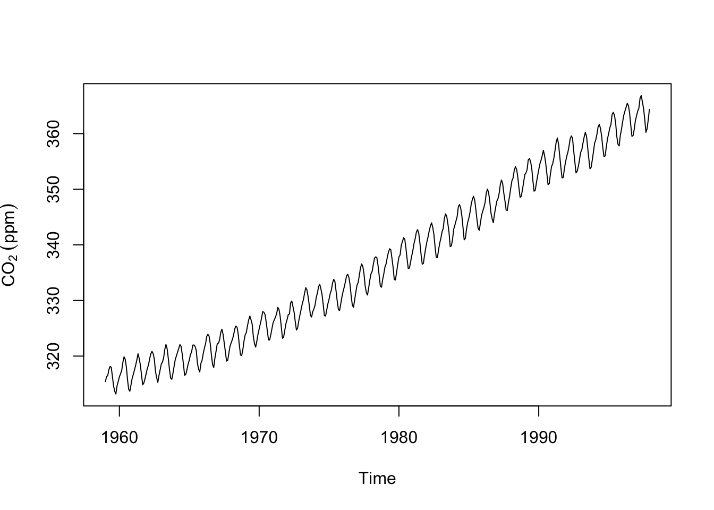
We’ve seen these data before. Note that these data are in the ts class and are sampled monthly with freq=12 in the properties. Plotting is the best way to explore a time series. But we can get a little more formal about these data. It’s pretty clear that this time series has a trend and a seasonal component. There is some noise on top of that. We can write this out as an additive time series model:
\[y_t = m_t + s_t + z_t\]
where at time \(t\), \(y_t\) is the observed series, \(m_t\) is the trend in the data, \(s_t\) is the seasonal component, and \(z_t\) is the residual noise or error. Definitely read the part in the chapter about multiplicative time series models – we will see a few of those along the way.
There are a few different ways to approach decomposing these data. We could get the trend (\(m\)) by fitting a model as a function of time or we could calculate a moving average of some kind that would remove the seasonal component (\(s\)). Let’s do the second approach as this will let us see the parts of the trend that aren’t purely linear (like we would get from fitting a model like lm(y~time(y))).
A centered moving average (aka a moving average with symmetric window) will let us estimate the trend. \[\hat m_t = \frac{\frac{1}{2}y_{t-6} + y_{t-5} + y_{t-4} + y_{t-3} + y_{t-2} + y_{t-1} + y_{t} + y_{t+1} + y_{t+2}+ y_{t+3}+ y_{t+4}+ y_{t+5}+ \frac{1}{2}y_{t+6}}{12}\]
where \(t = 7, 8,...., n-6\) where \(n\) is the length of \(y\). We can implement this using a loop where we start on the 7th observation of the co2 data (to keep the indexing happy) and calculate each value of \(\hat m\). We’ll lose the fist six and last six observations.
n <- length(co2) # length of the record
m.hat <- rep(NA,n) # an empty vector to store results
for(i in 7:(n-6)){
m.hat[i] <- (0.5*co2[i-6] + co2[i-5] + co2[i-4] + co2[i-3] + co2[i-2] +
co2[i-1] + co2[i] + co2[i+1] + co2[i+2] + co2[i+3] + co2[i+4] + co2[i+5] +
0.5*co2[i+6])/12
}
m.hat <- ts(m.hat) # make it a time series
# give it the right start time and frequency by copying tsp() from co2
tsp(m.hat) <- tsp(co2)
plot(m.hat,ylab=expression(CO[2]~(ppm))) # here is the trend.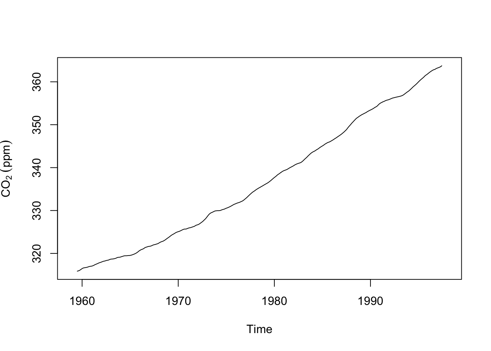
The code above gave us an estimate of the trend (we put a hat on estimates by convention). But this is a bit ugly, right? Loops are often that way. But it’s important to see what is happening. We are stepping through the data and applying the moving average looking back six time steps and forward six time steps. At each iteration we write the value of the moving average to the ith space in the empty vector m.hat. While it’s good to know how this stuff works there are better ways of doing this and you’ve already probably thought of this: We don’t have to this with a loop. Let’s do this the easy way with the filter function. Note that if you have tidyverse located you might have a conflict between dpylr::filter from the tidyverse and stats::filter which is part of base R. We want stats::filter here. Watch and remember those messages when you load a package!
f <- frequency(co2)
filt <- c(0.5, rep(1, times=f-1), 0.5)/f
m.hat <- stats::filter(x=co2, filter=filt) # note stats::filterThat’s also \(\hat m\) but done with quite a bit less pain. But make sure you understand what the loop code did above.
What about the seasonal component \(s\)? We can get an estimate (\(\hat s\)) by subtraction: \(\hat s_t = y_t - \hat m_t\).
s.hat <- co2 - m.hat
par(mfcol=c(2,1))
plot(s.hat,ylab=expression(CO[2]~(ppm)))
boxplot(s.hat~cycle(s.hat),xlab="Month",ylab=expression(CO[2]~(ppm)))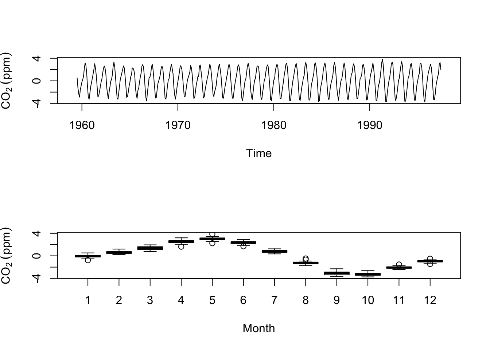
So, via subtraction we got an estimate of the seasonal component and by making boxplots by month we see the draw down of CO\(\mathrm{_2}\) during the North American summer and the rise in winter. Thus at the moment we have a nice model of the this time series: \(y_t=m_t+s_t\) but we don’t have any residual noise \(z_t\). I’m going to show you how we can calculate the residual if we assume that the seasonal cycle is the same every year. I’ll do that by calculating the mean of \(\hat s\) for each month and treat deviations from the mean as the noise term \(\hat z\).
s.hat <- aggregate(s.hat~cycle(s.hat),FUN=mean) # length of 12
s.hat <- rep(s.hat$s.hat,length(co2)/12) # repeat this component for each year
s.hat <- ts(s.hat) # make it a ts object
tsp(s.hat) <- tsp(co2)
# thus noise is
z.hat <- co2 - m.hat - s.hat
plot(z.hat)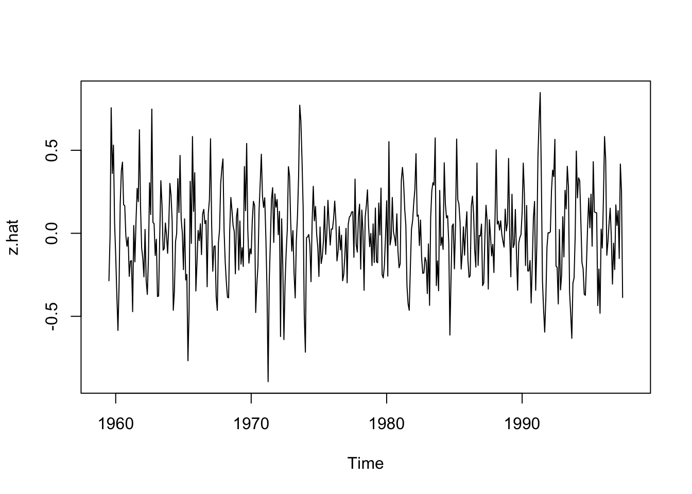
At some point when building a model you have to ask if it’s “good” or at least “useful.” We calculated the residuals (errors) on the decomposed time series as \(\hat z\).
Just like in a regression model or a machine learning model or any model really, we can examine the residuals for patterns, to see if they are normally distributed, and/or look at the mean squared error (MSE) or the root mean squared error (RMSE)
## [1] 0.0701273## [1] 0.2648156If we were comparing this decomposition to a different method we could compare the MSE or RMSE as a way of deciding which one was better.
We can also combine these how we like and look at the CO\(\mathrm{_2}\) trend and noise. This might be called the deseasonalized CO\(\mathrm{_2}\).
co2_deseas <- m.hat + z.hat
plot(co2_deseas,ylab=expression(CO[2]~(ppm)),main="Deseasonalized Carbon Dioxide")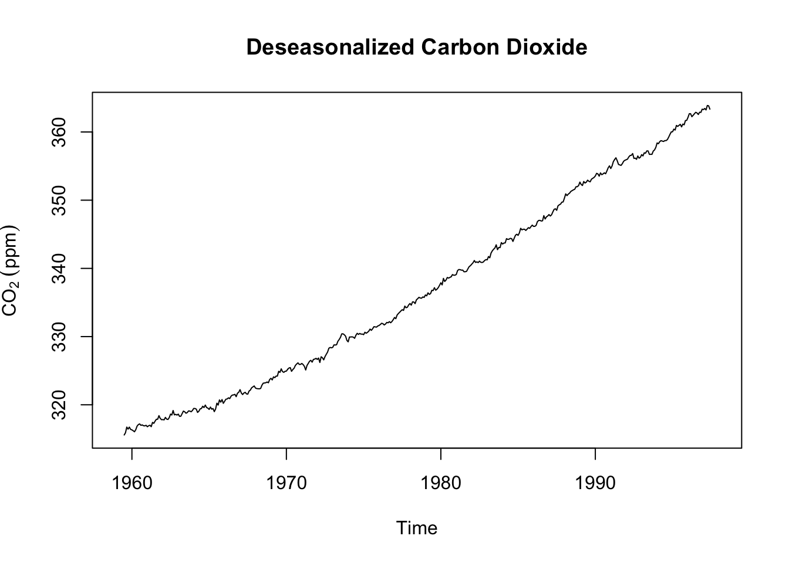
Let’s look at the whole thing by combining each of these parts into a single ts object. Note the scale of the y-axis on each plot (the units are still ppm).
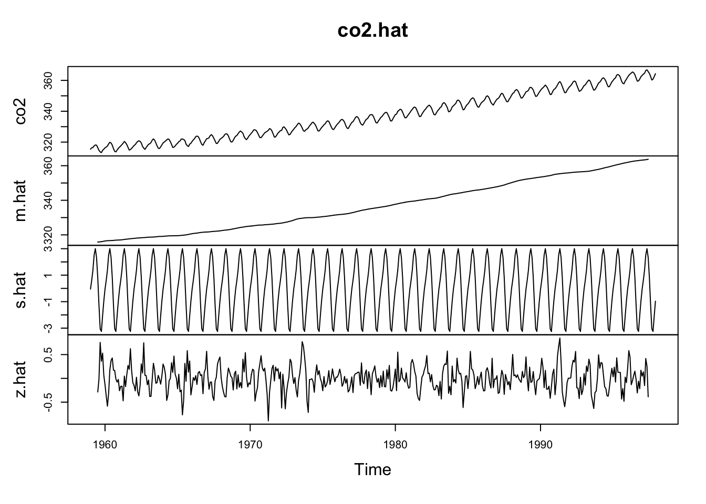
We just did some fancy model building and broke an additive time series into its constituent parts! Walk through each line of code above and make sure you understand what we did.
4.4.2 Breaking down a series the easy way
Now, as much as I’m sure you enjoyed the journey above, you’ll be pleased to know that R has function for doing this much more quickly:
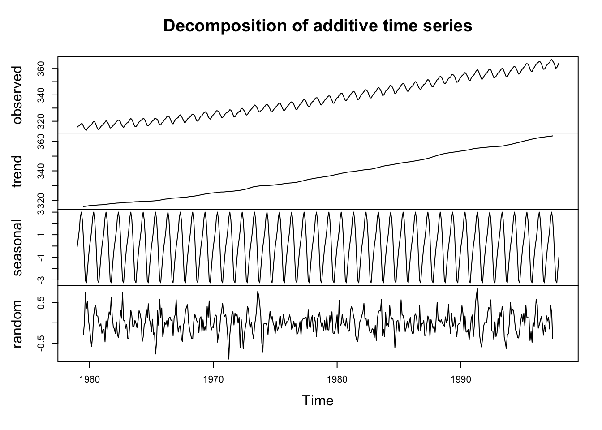
Pretty cool, huh? The plot shows the original data plus all the components and these can be combined just like we did above. Look at str(co2Decomp).
## List of 6
## $ x : Time-Series [1:468] from 1959 to 1998: 315 316 316 318 318 ...
## $ seasonal: Time-Series [1:468] from 1959 to 1998: -0.0536 0.6106 1.3756 2.5168 3.0003 ...
## $ trend : Time-Series [1:468] from 1959 to 1998: NA NA NA NA NA ...
## $ random : Time-Series [1:468] from 1959 to 1998: NA NA NA NA NA ...
## $ figure : num [1:12] -0.0536 0.6106 1.3756 2.5168 3.0003 ...
## $ type : chr "additive"
## - attr(*, "class")= chr "decomposed.ts"See that co2Decomp is a new class (decomposed.ts) and a list with six components. You can assess the components in the normal way (e.g., co2Decomp$trend). Also see that the function reminds us that this is an additive model. The decompose function also works with multiplicative time series:
\[y_t = m_t \times s_t \times z_t\]
The book has good stuff on the multiplicative model but also has a typo in Eq 1.3. The equation above is correct. See text for details and the help page for decompose. I don’t want to spoil the fun.
4.4.3 How does m differ from the slope in a lm?
Let’s think for a minute about what a “trend” is. Note that we said above that \(m_t\) is the trend in the data. We’ve also said that we can use the slope in a linear model to describe the trend. Like this:
co2LinearModel <- lm(co2~time(co2))
plot(co2,ylab=expression(CO[2]~(ppm)))
abline(co2LinearModel,col="red")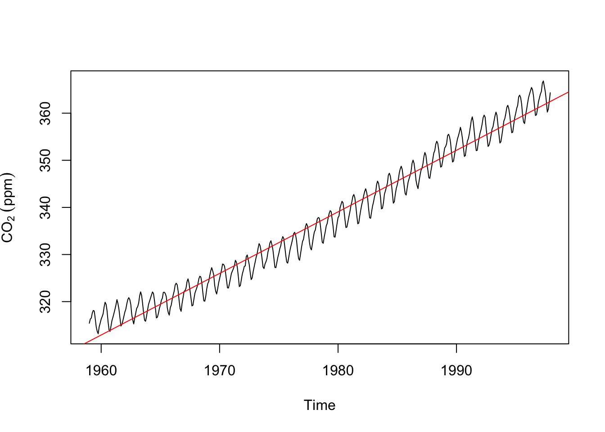
We can look at those two together.
plot(m.hat,ylab=expression(CO[2]~(ppm))) # trend from the decomposition.
abline(co2LinearModel,col="red") # and the trend from a linear model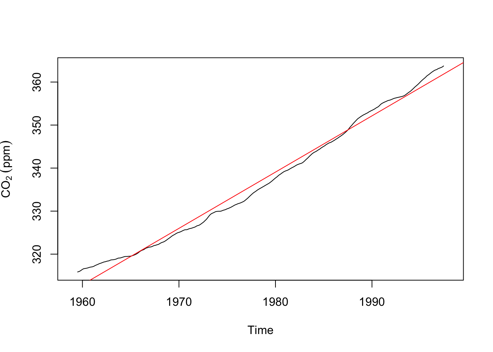
Take a minute to appreciate how and why these are both trends and how and why they differ.
4.4.4 Warning
Computers just do what they are told. The decompose function will find a trend and seasonal component even in data that don’t have one. I’m going to create a time series of “monthly” data that runs 10 years starting in the year 2010. Then I’ll decompose it.
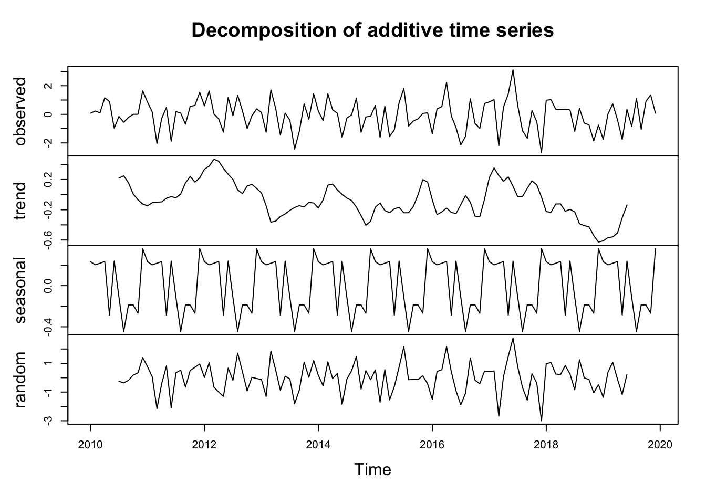
Note that there is NO trend in y – it’s just random numbers. And there is no seasonal structure in y – it’s just random numbers. But decompose was very content to pull out the trend and seasonal parts of the data. Note the magnitude of the y-axes and you can see that there isn’t a lot of there there. But, if you didn’t know better you might obsess over this plot and trick yourself into finding patterns where none exist.
4.5 Stationarity
I linked to a nice video on stationarity in time series. It’s worth a watch and clearer than the book. I’ll spare you much more than that statement for now and not ask you to wade through any code. But be aware that data with a persistent trend are not stationary, nor are data with changing variance, nor data which have a seasonal component. E.g., look at the AirPassengers data below. It’s a classic time series that have been used to teach generations of time-series students and is featured in the reading. It fails on all three aspects of stationarity!

We will talk more in the future about when you should test for stationarity – maybe because a test you are using a model that assumes stationarity. And when you should just note it as a descriptive feature of a time series – remember, your eye is a really good diagnostic tool.
4.6 Your Work
4.6.1 Air Passengers
First, look at the AirPassengers data above. Decompose it with an additive model and then a multiplicative model. Report on what you have found. Pay attention to the the units on the multiplicative model. Compare the two models using MSE (again, watch the units).
4.6.2 KBLI
Second, revisit the climate data from the Bellingham airport from last week. Note the use of ggplot – which I prefer for my own work.
kbli <- readRDS("data/kbli.rds")
kbli_tb <- broom::tidy(kbli)
kbli_tb <- kbli_tb %>%
mutate(series = recode(series,
PRCP = "Precipitation (mm)",
TEMP = "Temperature (C)"))
kbli_tb %>%
ggplot(mapping = aes(x=index,y=value)) +
geom_line() +
labs(x="Date",y=element_blank()) +
facet_wrap(~series,scales = "free",ncol=1) +
theme_minimal()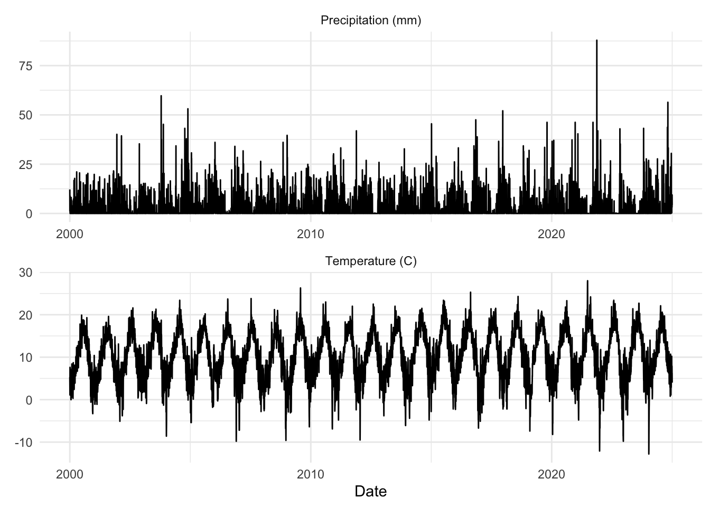
Then (with good reporting, plotting, and other exploratory data analysis) try this:
Aggregate the variables (temperature and precipitation) to monthly resolution using mean for temperature and sum for precipitation. You’ll probably want to do this using
aggregatewithas.yearmon– see the examples inaggregate.zoo. ThehydroTSMpackage has some nice functions as well for this kind of thing (e.g.,daily2monthly).Decompose these monthly data. The function
decomposeworks on classtsand not on classzoothough, so you’ll have to change the class of the data. Report on what you find for the decomposition.Finally, aggregate the variables (temperature and precipitation) to annual resolution for each season (winter, spring, summer, fall) using mean for temperature and sum for precipitation. Use linear models and report any trends. E.g., are summer temperatures increasing? Meteorological seasons are groups of three months. I.e., winter is Dec, Jan, Feb; spring is Mar, Apr, May; summer is Jun, Jul, Aug, autumn is Sep, Oct, Nov.
As an example, here is a plot of summer temperatures.
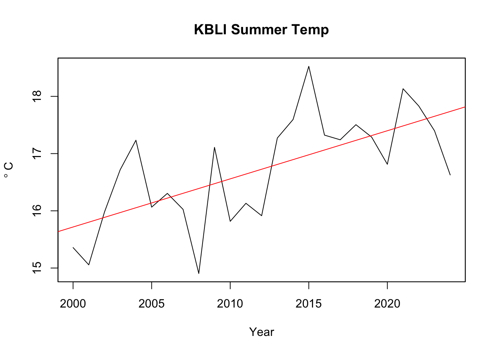
You can report the slopes in a table if you like. Easier and clearer than plotting everything probably.
4.6.3 Write Up and Reflect
Pass in a R Markdown doc with your analysis. Leave all code visible, although you may quiet messages and warnings if desired. Turn in your knitted html. The last section of your document should include a reflection where you explain how it all went. What triumphs did you have? What is still confusing? Are you clear on why \(m_t\) from decompose is not the same as the coefficient from a linear model (lm)?